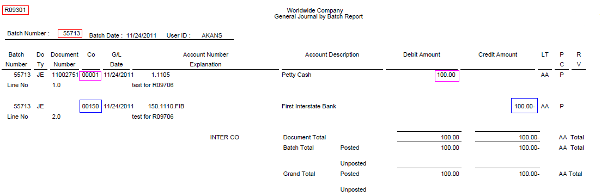
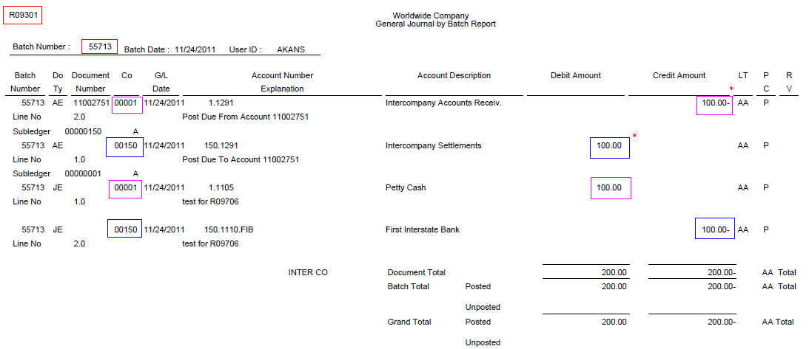

| Purpose |
| Scope |
| Details |
| Overview |
| Program Functionality |
| Setup |
| Processing Options |
| Data Selection |
| Reviewing the Report |
| Resolving the Integrity |
| Reasons for Integrity |
| Frequently Asked Questions |
| Question 1: Client is facing performance issues while running Company by Batch Out of Balance integrity report (R09706). How to deal with this scenario? |
| Question 2: Why am I getting blank output for R09706 report? |
This document provides an overview of the Company by Batch Out of Balance integrity report (R09706), including the overview, program functionality, setup, and information on reviewing and resolving the integrity report.
This document is intended for Finance Functional users who will be running and troubleshooting the General Accounting Integrity reports.
The Company by Batch Out of Balance integrity report (R09706) locates out-of-balance amounts within each batch by company
The Company by Batch Out of Balance report (R09706) reviews only posted transactions in the F0911 table. This report totals all posted transactions in the F0911 table by batch and compares each batch total to the batch header record in the F0011 table. It prints all batches that are out of balance and also includes:
Add. Ledger Tab
Ledger Type
Apart from the default data selection as follows i.e. to include only posted records as well as exclude batches marked with 'Exclude Batch from Integrity Report' flag, you may further consider to specify Batch Type, Batch Date and Company for better performance.

It lists all the batch numbers in question along with amount by which the batch is out of balance for each given company.
* For Batch number 55713, Batch Type G, it shows each Company 00001 and 00150 are out of balance by amount 100.00. You may considering either of the following to resolve integrities for this scenario:-
Run the General Journal by Batch report (R09301) or export the data to analyze the detail records.

It implies that the Intercompany transactions are missing for each of the Company.
Option A:
Resolve the issue by creating system generated Intercompany settlements:
1. Since its a G type batch, update the following fields to mark the batch as unposted:
F0911.GLPOST = ' '
F0011.ICIST = ' '
For other batch types, like IB, RB, V, etc. corresponding AR or AP tables need to be updated. For instance, in a similar case of IB batch type, F03B11 would be updated along with F0011 and F0911.
2. Make sure that the Intercompany Settlement method is set to '1' or '2' in GA Constants and corresponding AAIs for intercompany are setup correctly.
3. Run R09801 Post report to post the batch in order to create intercompany settlement entries.
4. Re-run R09301 to view the latest set of intercompany entries being generated.

* The entries created as part of intercompany settlement.
5. Run R099102 Repost report for the accounts affected in order to reset the effect of running R09801 twice.
Option B:
The intercompany settlements can be created manually, using the amounts from the integrity reports. The entry will need to be made out of balance to the intercompany settlement accounts as follows:
1. Locate the intercompany accounts (you can find them associated to ICCC AAIs for each company)
2. In P0901, you may need to change the posting edit code for each of these accounts from 'M' (machine generated) to ' '.
3. Using the R09706 integrity report, create a manual entry to the intercompany accounts to create the balancing offsetting entries for each company in this batch.
4. Ensure that the manual JE is set out of balance by selecting Form Exit --> Features. Check "Out of Balance JE Mode" and save the JE.
5. Further, set the batch to post out of balance by selecting P0011 Row Exit --> Batch Revise. Further select Form Exit --> Overrides. Check "Allow batch to post out of balance". Save the changes.
6. Post the batch (out of balance). This will not create any subsequent intercompany transactions.
7. After the batch is posted, set the batch to not be included on integrity report. This will remove it from showing on R09706.
8. In P0901, add the posting edit code of 'M' back to your intercompany accounts, if you had to remove it in step 2.
The reasons for batch to show up on this integrity may include:
Answer 1: Apart from the standard data selection, you should consider narrowing down the data being processed by specifying the Batch Type and Company. To further reduce processing time, you may also include the Batch Date in order to process only batches from a specific period of time. Enhancement BUG 11014917 has also been logged requesting improvement of performance for R09706 report.
Answer 2: This report is an exception report. If no discrepancies exist, a blank report is printed. An enhancement Bug 16382062 has been raised requesting the report to print an informative message "No reported differences detected", if it does not detect any reported issues with batches.